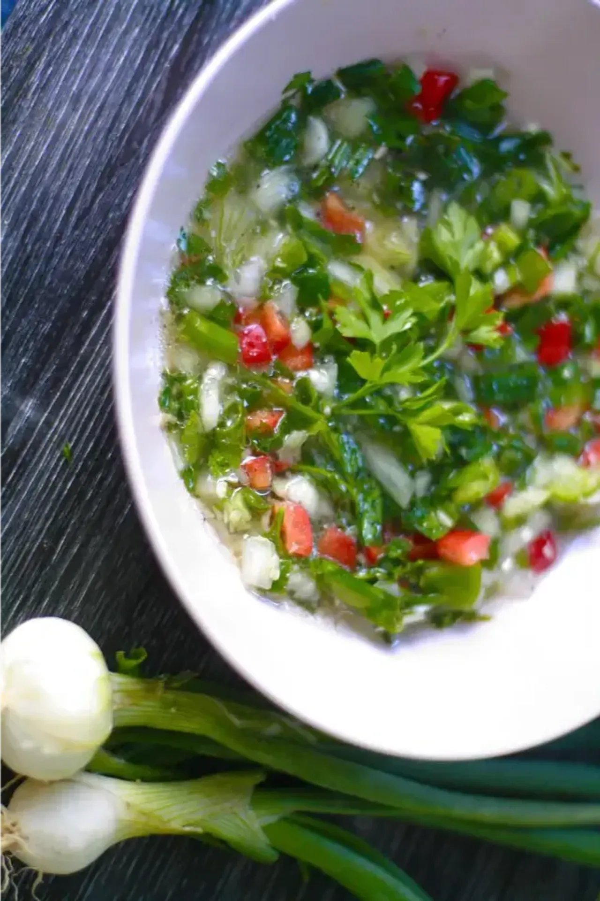

Sauce pour accompagner, les viandes grillés ou les salades de riz.
Haché finement les oignons, le persil, le piment végétarien et la cive
Ajouter du sel, du poivre et un morceau de piment. Versez le jus de citron vert, et l'huile.
Faire bouillir de l'eau, puis versez l'eau dans la préparation.
Coupez en dés la tomate et versez les morceaux dans la sauce. Rectifier